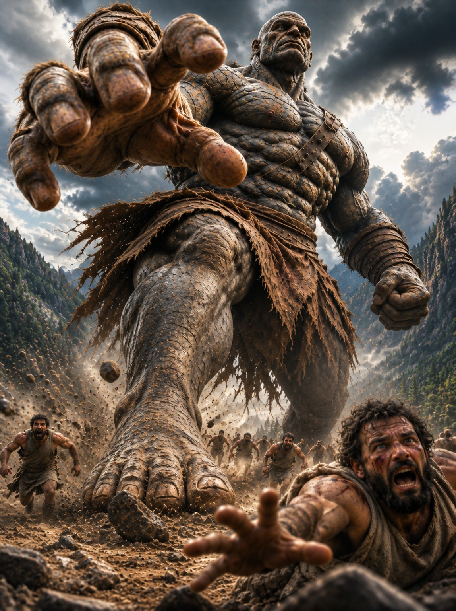

AMR STUDIOS · EXPERIMENTAL EXHIBIT 001
THE LIVING GALLERY
Ancient legends. A new dimension.
Our cinematic artwork becomes an interactive scene. Move your mouse or drag your finger to reveal depth in the entire image.
NOW EXPLORING
The First Exhibit

EXHIBIT 001 · INTERACTIVE DEPTHGigantes UnleashedMove the scene. Discover its depth.Explore in 3D